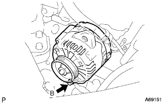
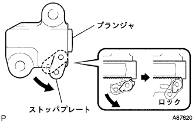

シリンダヘッド ガスケット（1NZ-FE(4WD)） 取り外し |
| 1. 燃料流出防止作業 |
| 2. バッテリマイナスターミナル切り離し |
参照| 3. フロントタイヤRH取りはずし |
ハブナットをはずし、フロントタイヤを取りはずす。
| 4. シリンダヘッド カバー NO.2取りはずし |
 |
ナット4個をはずし、シリンダヘッドカバーNo.2を取りはずす。
| 5. イグニッション コイル NO.1取りはずし |
イグニッションコイルのコネクターおよびボルトをはずし、イグニッションコイル全数を取りはずす。
| 6. ベンチレーション ホース切り離し |
 |
ベンチレーションホースを切り離す。
| 7. ベンチレーション ホース NO.2切り離し |
 |
ベンチレーションホースNo.2を切り離す。
| 8. エア クリーナASSY取りはずし |
 |
VSVのコネクターおよびホース2本を切り離す。
エアフローメータのコネクターおよびワイヤハーネスクランプを切り離す。
エアクリーナキャップ W/エアクリーナホースNo.1を取りはずす。
エアクリーナフィルタエレメントを取りはずす。
 |
ボルト4本をはずし、エアクリーナケースとエアクリーナインレットNo.1およびエアクリーナインレットNo.2を取りはずす。
| 9. シリンダヘッド カバーSUB-ASSY取りはずし |
 |
ボルト9本およびナット2個をはずし、シリンダヘッドカバーを取りはずす。
| 10. ファン ＆ オルタネータ Vベルト取りはずし |
 |
調整用ボルトAおよび固定用ボルトBをゆるめる。
Vベルトの張力をゆるめてVベルトを取りはずす。
| 11. オルタネータASSY取りはずし |
 |
ターミナルキャップを取りはずす。
ナットをはずし、+B端子を取りはずす。
コネクターを切り離す。
ワイヤハーネスクランプを取りはずす。
 |
ボルトAおよびナットをはずし、ファンベルトアジャスティングバーを取りはずす。
|  |
ボルトBをはずし、オルタネータを取りはずす。
| 12. エンジンアンダ カバー RH取りはずし |
ボルト2本およびスクリュ2本をはずす。
ナットをはずし、エンジンアンダカバーRHを取りはずす。
| 13. エンジンオイル抜き取り |
| 14. 冷却液(トヨタ純正スーパーLLC)抜き取り |
ラジエータキャップを開ける。
ラジエータドレーンコックプラグをゆるめ冷却液を抜き取る。
| 15. ベーンポンプVベルト(パワステベルト)取りはずし |
 |
固定用ボルトAおよび調整用ボルトBをゆるめる。
Vベルトの張力をゆるめてVベルトを取りはずす。
| 16. ウォータポンプ プーリ取りはずし |
 |
SSTを使用して、ウォータポンププーリを固定する。
ボルト3本をはずし、ウォータポンププーリを取りはずす。
| 17. エンジンウォータポンプASSY取りはずし |
 |
ボルト3本およびナット2個をはずし、ウォータポンプASSYを取りはずす。
| 18. エンジンマウンティング インシュレータSUB-ASSY RH取りはずし |
 |
木片などを介して、ジャッキでエンジンを支える。
 |
ボルト5本およびナットをはずし、エンジンマウンティングインシュレータRHを取りはずす。
| 19. エンジンマウンティング ブラケット RH取りはずし |
 |
ボルト4本をはずし、エンジンマウンティングブラケットRHを取りはずす。
| 20. クランクシャフト ダンパSUB-ASSY取りはずし |
No.1シリンダ圧縮上死点セット
クランクシャフトダンパを正回転させ、合わせマーク(切り欠き)をチエーンカバー0°の位置に合わせる。
このとき、カムシャフトタイミングギヤの合わせマークが図の位置にあることを確認する。
ジャッキを操作し、エンジンフロント側を下げてSSTがセットできる位置にする。
 |
SSTを使用してクランクシャフトダンパを固定し、ボルトを取りはずす。
クランクシャフトダンパを取りはずす。
| 21. クランクポジション センサ取りはずし |
 |
コネクターを切り離す。
ボルトをはずし、クランクポジションセンサを取りはずす。
| 22. カムシャフトタイミングオイルコントロール バルブASSY取りはずし |
カムシャフトタイミングオイルコントロールバルブのコネクターを切り離す。
ボルトをはずし、カムシャフトタイミングオイルコントロールバルブを取りはずす。
| 23. オイル ポンプASSY取りはずし |
ボルト15本およびナットを取りはずす。
 |
保護テープを巻いたマイナスドライバーを使用して、オイルポンプASSYをこじて取りはずす。
| 24. オイルポンプ シール取りはずし |
保護テープを巻いたマイナスドライバーを使用して、オイルシールを取りはずす。
| 25. チェーン テンショナASSY NO.1取りはずし |
 |
 |
ロックが解除された状態でプランジャを奥まで押し込む。
|  |
プランジャが奥まで押し込まれた状態からストッパプレートを下にさげ、プランジャをロックする。
 |
プランジャがロックされた状態からストッパプレートの穴にφ3mmの棒または六角棒レンチを差し込む。
ボルト2本をはずし、チェーンテンショナASSY Nｏ.1を取りはずす。
| 26. チェーンテンショナ スリッパ取りはずし |
ボルトをはずしチェーンテンショナスリッパを取りはずす。
| 27. チェーンバイブレーション ダンパ NO.1取りはずし |
ボルト2本をはずし、チェーンバイブレーションダンパ Nｏ.1を取りはずす。
| 28. チェーンSUB-ASSY取りはずし |
チェーンを取りはずす。
| 29. エキゾーストパイプASSY FR切り離し |
ボルト2本をはずし、エキゾーストパイプASSY FRを取りはずす。
| 30. マニホルドサポート ブラケット取りはずし |
 |
ボルト3本をはずし、マニホールドサポートブラケットを取りはずす。
| 31. オキシジエンセンサコネクター切り離し |
 |
ボルトをはずし、コネクタステーを取りはずす。
オキシジエンセンサコネクターを切り離す。
| 32. アクセルレータ コントロールケーブルASSY切り離し |
| 33. ウォータバイパス ホース切り離し |
ウォータバイパスホースを切り離す。
| 34. ウォータバイパス ホース NO.2切り離し |
ウォータバイパスホースNo.2を切り離す。
| 35. スロットル ボデーASSY取りはずし |
 |
スロットルポジションセンサおよびアイドルスピードコントロールバルブのコネクターを切り離す。
ボルトおよびナット2個をはずし、アクセルレータコントロールケーブルブラケットおよびスロットルボデーASSYを取りはずす。
インテークマニホルドよりガスケットを取りはずす。
| 36. ウォータ フィラSUB-ASSY取りはずし |
 |
ラジエータインレットホース、ラジエータホースNo.3およびラジエータリザーブタンクホースを切り離す。
ボルト2本をはずし、ウォータフィラを取りはずす。
| 37. ユニオン トゥー コネクタチューブ ホース切り離し |
ブースタバキュームチューブからユニオン ツウ チェックバルブホースを切り離す。
| 38. インテーク マニホルド取りはずし |
 |
ボルト2本をはずし、ブレーキブースタ用バキュームチューブを取りはずす。
インテークマニホールドからワイヤハーネスを切り離す。
図の順序でボルト3本およびナット2個をはずし、インテークマニホールドを取りはずす。
インテークマニホールドからガスケットを取りはずす。
| 39. オイルレベルゲージ ガイド取りはずし |
オイルレベルゲージを取りはずす。
ボルトをはずし、オイルレベルゲージガイドを取りはずす。
| 40. ラジエータ インレット ホース切り離し |
 |
クランプをはずし、ラジエータインレットホースを取りはずす｡
| 41. ラジエータ アウトレットホース切り離し |
 |
クランプをはずし、ラジエータアウトレットホースを取りはずす｡
| 42. フューエル チューブSUB-ASSY切り離し |
 |
フューエルパイプクランプNo. 1を取りはずす。
 |
フューエルチューブコネクターとフューエルパイプを切り離す。
| 43. ユニオン トゥー チェックバルブ ホース切り離し |
ブースタバキュームチューブからユニオンツウチェックバルブを切り離す。
| 44. ヒータウォータ ホース インレット A切り離し |
ヒータウォータインレットホースAをラジエータヒータユニットから切り離す。
| 45. ヒータウォータ ホース アウトレット A切り離し |
ヒータウォータアウトレットホースAをラジエータヒータユニットから切り離す。
| 46. ウォータバイパス パイプ NO.1切り離し |
ボルト2本およびナット2個をはずし、ウォータバイパスパイプNo.1を取りはずす。
| 47. エンジン ワイヤ切り離し |
エンジンワイヤを切り離す。
| 48. カムシャフト取りはずし |
 |
 |
図の順序でカムシヤフトベアリングキャップNo.1およびNo.2をはずし、カムシャフトおよびカムシャフトNo.2を取りはずす。
| 49. シリンダ ヘッドSUB-ASSY取りはずし |
ダブルヘキサゴンレンチ8を使用して、図の順序でシリンダヘッドボルトを数回に分けてゆるめシリンダへッドボルトおよびワッシャを取りはずす。
シリンダへッドを取りはずす。
| 50. シリンダヘッド ガスケット取りはずし |
シリンダヘッドガスケットを取りはずす。